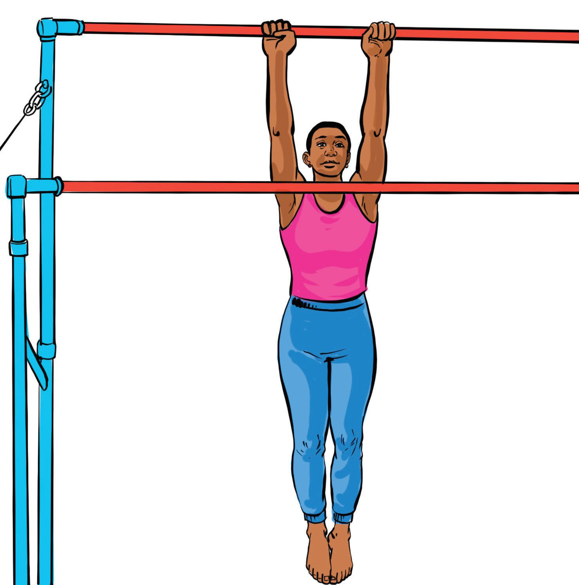

the upper body. There are various hangs including straight arm hang, flexed arm hang, pike arm hangs and inverted hang.
Straight arm hang
Straight arm hang refers to a position where a gymnast hangs from a bar with arms fully extended and their body in a straight or slightly hollowed position. This is a fundamental position used in various swings, releases, and transitions. The following steps will help you practice straight arm hang:
- (i)Find a suitable bar, a high bar for men, and an uneven bar for women, ensure it is high enough relative to your height;
- (ii)Grip the bar using an overhand grip with hands shoulder-width apart, fingers wrapped securely around, and thumbs under the bar for better grip;
- (iii)Keep your arms fully extended but not locked engaging your shoulders and lats, and maintain a slightly hollow body position;
- (iv)Keep your legs together and slightly in front of your body, fingers pointed; and
- (v)Hold for 10-30 seconds to develop grip and shoulder endurance and gradually increase your time as you get stronger, Figure 4.30.
